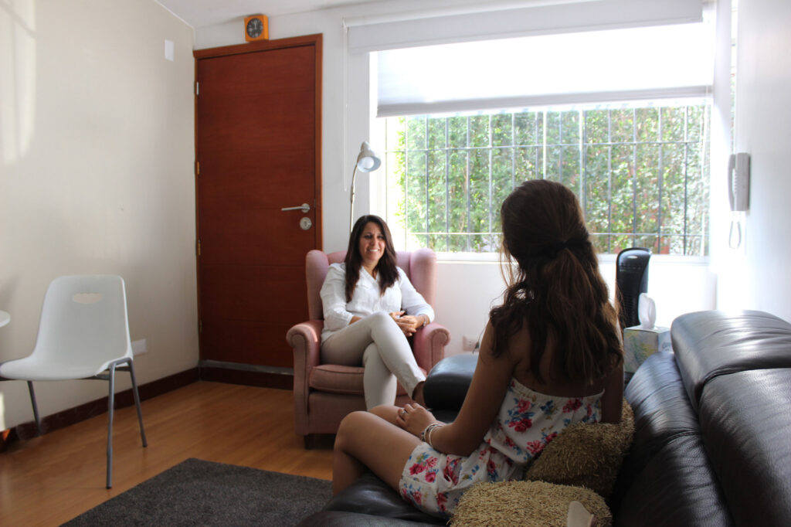
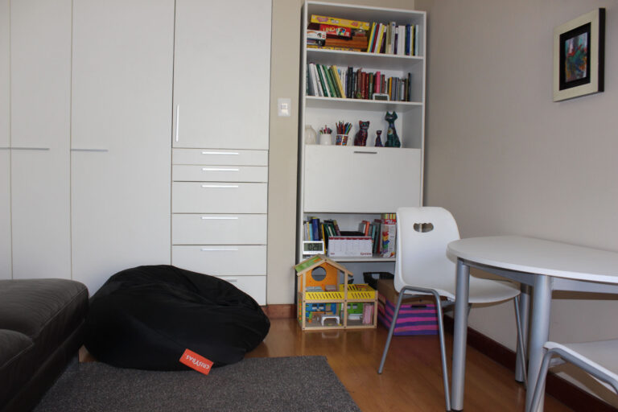

Niños
Psicoterapia desde los 3 años, con el juego, el dibujo y la expresión creativa como puentes para comprender su mundo emocional.
Conocer másConsultorio psicológico · Monterrico, Surco
Encuentra un espacio seguro y de confianza para conversar con un profesional aspectos personales y trabajarlos juntos, en busca de tu bienestar y tu desarrollo.

Servicios
Psicoterapia desde los 3 años, con el juego, el dibujo y la expresión creativa como puentes para comprender su mundo emocional.
Conocer másUn espacio confidencial para acompañar una de las etapas más intensas de la vida, con profesionales especializados.
Conocer másTrabajamos en profundidad: no solo con los síntomas, sino con las causas emocionales que los generan.
Conocer másPsicoterapia vincular: trabajamos los vínculos en profundidad, con el apoyo especializado que las relaciones más importantes necesitan.
Conocer másEvaluaciones integrales para niños, adolescentes y adultos, que identifican síntomas y orientan la terapia más adecuada.
Conocer másPara adolescentes: 8 sesiones en Los Álamos de Monterrico para fortalecer las habilidades sociales y el manejo de emociones.
Conocer másNuestro enfoque
Trabajamos en profundidad, con respeto por los tiempos de cada persona y sin fórmulas rápidas.
Nuestra orientación es psicoanalítica
Cómo empezar
Cuéntanos qué buscas y para quién es la consulta: niño, adolescente, adulto, pareja o familia.
Acordamos contigo el día y el horario, en nuestro consultorio de Los Álamos de Monterrico o de forma virtual.
En un espacio seguro y de confianza, compartes lo que te trae y lo trabajan juntos.
Con respeto por tus tiempos, definen juntos cómo seguir el proceso.
El consultorio
En Los Álamos de Monterrico, Surco, un espacio cálido y sin juicios.

Equipo
Psicóloga clínica · Psicoterapeuta vincular · Fundadora y directora
Psicóloga clínica por la Universidad Femenina del Sagrado Corazón (UNIFE), colegiada por el Colegio de Psicólogos del Perú (C.P. 29983) y graduada del Centro de Psicoterapia Psicoanalítica de Lima (CPPL) como psicoterapeuta de orientación psicoanalítica.
Con especialización en niños y adolescentes, y graduada como psicoterapeuta psicoanalítica de pareja y familia. Fundó Sentir en 2021 con la convicción de que el bienestar emocional es un derecho y de que cada persona merece un espacio de calidad para trabajarlo.
Psicoterapeuta psicoanalítico · Director gerente general
Graduado del CPPL, con especialización en niños y adolescentes. Más de 20 años de trabajo en organismos internacionales, entre ellos el Banco Mundial y las Naciones Unidas.
Psicóloga psicoterapeuta psicoanalítica
Psicóloga clínica por la UNIFE (C.P. 29383), formada en el CPPL en psicoterapia de adultos, niños y adolescentes. Maestría en Psico-Oncología (Universidad Favaloro, Buenos Aires).
Psicóloga psicoterapeuta psicoanalítica
Licenciada en Psicología Clínica por la Universidad de Lima (C.P. 29717), graduada del CPPL. Especialización en niños y adolescentes; experiencia en evaluaciones y talleres para padres y adolescentes.
Psicóloga psicoterapeuta psicoanalítica
Psicóloga clínica (C.P. 26916), graduada del CPPL. Experiencia en evaluaciones para niños, adolescentes y adultos, y en atención de casos de violencia familiar y sexual. Miembro de Sentir desde agosto de 2022.
Psicóloga psicoterapeuta psicoanalítica
Psicóloga clínica (C.P. 36663), graduada del CPPL, con especialización en niños y adolescentes. Terapeuta de los departamentos Freud y Winnicott del CPPL. Miembro de Sentir desde julio de 2021.
Psicóloga psicoterapeuta psicoanalítica
Psicóloga clínica (C.P. 4160) con más de 30 años de experiencia. Maestría en Intervención Clínica Psicoanalítica por la PUCP. Especializada en adultos y parejas.
Preguntas frecuentes
Respondemos las dudas más comunes. Si queda alguna, escríbenos.